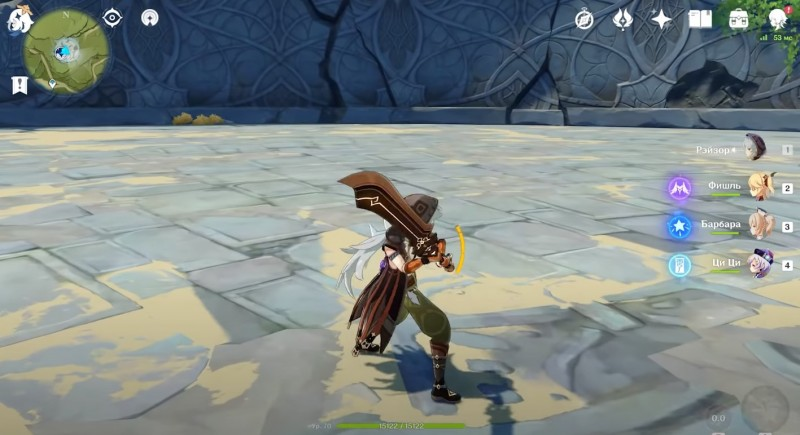

В Genshin Impact Рэйзор является 4-звездочным персонажем, относящимся к Электро классу и орудующим двуручным мечом. Он способен прекрасно выполнять функцию основного или второстепенного дамагера (DPS) в команде. Если вы хотите узнать о его сильных и слабых сторонах, а также, какие артефакты и оружие ему следует дать, то изучите наше руководство.
Мы также расскажем вам о лучших билдах для Рэйзора, его сочетании с другими героями и предметах, которые необходимо для его прокачки и возвышения.
Сначала рассмотрим сильные и слабые стороны Рэйзора. К преимуществам этого героя можно отнести:
Высокий базовый физический урон
Сочетает в себе большой физический урон и мощные Электро умения.
Элементальный взрыв наносит значительные повреждения и усиливает защиту.
Мало того, что он наносит гарантировано высокий урон благодаря двуручному мечу, так еще его элементальные умения и взрывы направлены на повышение DPS на ближней дистанции.
К примеру, при активации ульты все удары Рэйзора получают Электро урон, а его скорость атаки увеличивается, поэтому он начинает наносить невероятно большие повреждения всем противникам, стоящим рядом с ним.
Рэйзор – не лучший выбор для игроков, которые любят часто менять персонажей во время боя для получения элементальных реакций. Дело в том, что Электро умения данного героя имеют малый радиус атаки и сильно ограничены для комбинирования с другими стихиями.
Кроме того, эффекты его элементального взрыва не переносятся при смене персонажей. Если вы планируете использовать Рэйзора, то готовьтесь к тому, что он станет вашим основным дамагером и бойцом-одиночкой – только так вы сможете полностью раскрыть его потенциал.
Полезно держать в группе во время исследования мира Пассивный талант Рэйзора снижает расход выносливости всех членов группы при беге на 20 процентов. Это делает его чрезвычайно полезным при исследовании новых областей.
В огромном открытом мире Genshin Impact вы будете часто изучать новые локации, используя спринт, поэтому обязательно возьмите с собой данного персонажа при решении отправиться в темные уголки карты.
Билд на физ. урон. Эта сборка использует все преимущества повышенного физического урона Рэйзора, позволяя ему наносить значительные повреждения врагам. В этом случае в качестве оружия можно взять:
Волчья погибель (5-звездочный) – повышает базовую атаку на 20 процентов. При попадании по врагу, уровень здоровья которого ниже 30 процентов, базовая атака всех участников команды возрастает на 40 процентов на 12 секунд. Эффект проявляется раз в 30 секунд.
Меч драконьей кости (4-звездочный; шанс критического удара) – урон героя повышается на 6 процентов каждые четыре секунды, пока он находится на поле боя. Эффект складывается до пяти раз и не исчезает при переключении героев. При использовании данного оружия советуем взять в команду героя, накладывающего щиты для сохранения бонуса.
Песнь разбитых сосен (5-звездочный; физический урон) – повышает показатель атаки на 16 процентов, а успешные обычные и заряженные удары дают печати шепота. При накоплении четырех печатей они исчезают, а у персонажа на 12 секунд повышается скорость нанесения обычных ударов (12 процентов) и сила атаки (на 20 процентов).
Прототип: Архаичный (4-звездочный) – в случая попадания обычным или заряженным ударом появляется 50-процентный шанс на несение дополнительных 300 процентов повреждений врагам. Возникает раз в 15 секунд. Можно скрафтить. Бюджетный вариант для Рэйзора.
Заснеженное звездное серебро (4-звездочный; физический урон) – с 60-процентной вероятностью создает ледяной кристалл над врагом при обычном или заряженном ударе, который падает вниз и наносит урон по площади в размере 80 процентов от силы атаки. Если противники имеют эффект Крио, то они получают 200 процентов урона. Способность проявляется раз в 10 секунд. Можно получить путем активации каменных плит в Драконьем хребте. Еще один бюджетный вариант оружия.
Что касается сетов артефактов, то рекомендуем обратить внимание на:
Конец гладиатора (5-звездочный) – 2 предмета: повышают силу атаки на 18 процентов; 4 предмета: повышают повреждения от простых ударов на 35 процентов при применении копья, меча или двуручного меча. Можно добыть из элитных боссов.
Бледный огонь – 2 предмета: повышают физические повреждения на 25 процентов, 4 предмета: увеличивают силу атаки на 9 процентов на 7 секунд при попадании стихийного умения по противникам. Последний эффект может суммироваться до двух раз и возникать не чаще одного раза за 0,3 секунды. На 2-м уровне физические повреждения возрастают на 100 процентов. Его потенциал можно реализовать только при разблокировке второго созвездия. Добыть же этот сет можно в подземелье «Горный дозор».
Воин (4-звездочный) – 2 предмета: повышает повреждения от простых и заряженных ударов на 15 процентов; 4 предмета: после применения стихийного умения повышает повреждения от заряженных и обычных атак на 25 процентов в течение 8 секунд. Бюджетный вариант для Рэйзора, который можно добыть в подземелье «Скрытый дворец Ву Ван».
Вы также можете взять два неполных набора «Конец гладиатора» и «Бледный огонь», если у вас не хватает предметов для создания полных сетов.